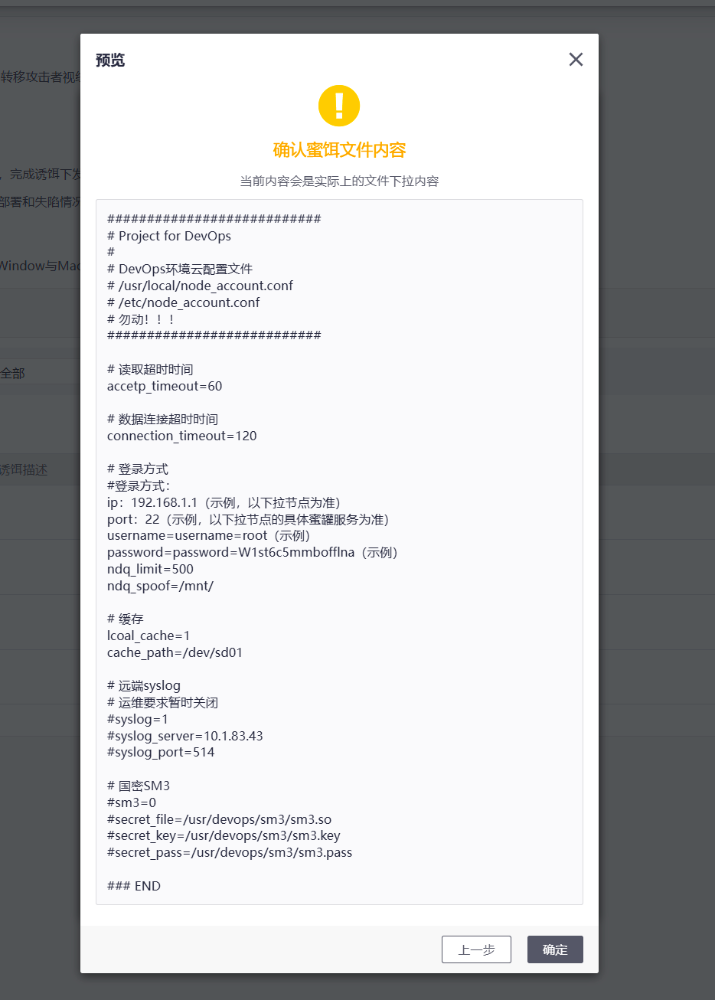
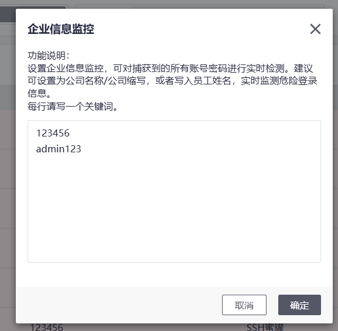

蜜罐学习笔记
概述主要分类1. 按交互程度分类2. 按用途分类3. 按形式分类核心技术原理主要功能与价值典型应用场景优势与局限发展趋势蜜罐系统1. DecoyMini（吉星·智能仿真与诱捕防御工具）2. HFish3. Modern Honey Network (MHN)4. Dionaea5. Kippo (SSH 蜜罐)6. Conpot (工控蜜罐)7. Glastopf (Web 蜜罐)HFish概述为什么选择HFish官网架构Linux部署Windows部署Docker部署版本升级数据库选择主动联网要求添加/删除节点内置节点新增节点删除节点添加/删除蜜罐直接修改蜜罐服务创建模版，应用到多节点查看攻击详情详细功能说明首页攻击列表扫描感知攻击来源账号资产失陷感知什么是蜜饵HFish的蜜饵分发接口样本检测告警配置登录管理进阶应用溯源什么是溯源Mysql反制厂商vpn蜜罐反制web型蜜罐溯源Java 远程调用蜜罐溯源IP画像高交互蜜罐账号失陷监控SSH蜜罐FTP蜜罐HTTP蜜罐Telnet蜜罐MySQL蜜罐Web蜜罐VNC蜜罐Redis蜜罐MemCache蜜罐ElasticSearch蜜罐Nginx卸载HFish管理端卸载Linux节点
概述
蜜罐技术本质上是一种对攻击方进行欺骗的技术，通过布置一些作为诱饵的主机、网络服务或者信息，诱使攻击方对它们实施攻击，从而可以对攻击行为进行捕获和分析，了解攻击方所使用的工具与方法，推测攻击意图和动机，能够让防御方清晰地了解他们所面对的安全威胁，并通过技术和管理手段来增强实际系统的安全防护能力
蜜罐好比是情报收集系统。蜜罐好像是故意让人攻击的目标，引诱黑客前来攻击。所以攻击者入侵后，你就可以知道他是如何得逞的，随时了解针对服务器发动的最新的攻击和漏洞。还可以通过窃听黑客之间的联系，收集黑客所用的种种工具，并且掌握他们的社交网络
主要分类
1. 按交互程度分类
- 低交互蜜罐：模拟有限服务（如只模拟FTP登录），风险低但信息有限
- 中交互蜜罐：模拟部分操作系统功能，能获取更多攻击信息
- 高交互蜜罐：真实操作系统和应用程序，风险高但能获取最全面攻击数据
2. 按用途分类
- 研究型蜜罐：用于学术研究，收集攻击数据
- 生产型蜜罐：保护企业网络，检测实际威胁
3. 按形式分类
- 服务器蜜罐：模拟易受攻击的服务器
- 客户端蜜罐：模拟易受攻击的客户端（如浏览器）
- 蜜网(Honeynet)：由多个蜜罐组成的网络
核心技术原理
- 欺骗技术：通过模拟漏洞、虚假数据等诱使攻击者上钩
- 数据控制：限制蜜罐对内部网络的访问，防止成为跳板
- 数据捕获：记录所有输入输出、网络流量和系统活动
- 数据分析：对收集的数据进行分析，提取攻击特征
主要功能与价值
- 威胁检测：发现新型攻击手段和0day漏洞
- 攻击分析：研究攻击者的工具、策略和动机
- 安全预警：提前发现针对组织的针对性攻击
- 取证调查：为安全事件提供法律证据
- 安全研究：帮助开发更好的防御措施
典型应用场景
- 企业网络安全防护
- 政府机构关键基础设施保护
- 网络安全厂商威胁情报收集
- 学术机构网络安全研究
- 云服务提供商安全监测
优势与局限
优势：
- 减少误报（蜜罐上的所有活动都可疑）
- 资源消耗低（只需监控少量系统）
- 能发现未知威胁
- 提供深度攻击信息
局限：
- 只能检测针对蜜罐的攻击
- 高交互蜜罐存在被用作跳板的风险
- 需要专业知识部署和维护
- 可能涉及法律问题（如隐私）
发展趋势
- 智能化：结合AI技术自动分析攻击行为
- 云蜜罐：基于云服务的分布式蜜罐系统
- IoT蜜罐：针对物联网设备的专用蜜罐
- 欺骗防御：与整个欺骗防御体系整合
蜜罐系统
市面上有许多免费的蜜罐系统可供选择，以下是一些比较知名的免费蜜罐系统及其特点：
1. DecoyMini（吉星·智能仿真与诱捕防御工具）
特点：
- 完全免费，支持插件化仿真模板，可一键下载部署。
- 提供可视化编排能力，可自定义蜜罐。
- 支持本地高质量威胁情报输出，可联动网关封堵攻击。
- 支持 Windows、Linux（CentOS/Ubuntu/Debian/Kali）及树莓派等平台。
适用场景：企业内网威胁感知、攻击诱捕与溯源分析。
2. HFish
特点：
- 基于 Golang 开发，跨平台（Windows/Linux/ARM/国产 CPU）。
- 支持 40+ 种蜜罐环境（如 SSH、FTP、Web、OA、IoT 设备等）。
- 提供云蜜网、自定义蜜饵、多告警方式（邮件/企业微信/钉钉等）。
- 采用 B/S 架构，管理端与节点端分离。
适用场景：内网失陷检测、外网威胁感知、威胁情报生产。
来源：HFish 蜜罐介绍。
3. Modern Honey Network (MHN)
特点：
- 支持多种开源蜜罐（如 Dionaea、Kippo、Conpot、Glastopf 等）。
- 提供集中管理界面，可快速部署蜜罐节点。
- 数据存储在 MongoDB，支持 API 访问。
适用场景：研究攻击行为、收集威胁情报。
来源：蜜罐网络（MHN）。
4. Dionaea
特点：
- 低交互蜜罐，模拟 FTP、HTTP、SMB 等服务。
- 可捕获恶意软件样本，适用于恶意代码分析。
适用场景：恶意软件捕获、漏洞利用分析。
来源：MHN 支持的蜜罐。
5. Kippo (SSH 蜜罐)
特点：
- 模拟 SSH 服务，记录攻击者登录行为。
- 支持文件下载记录，适用于 SSH 暴力破解分析。
适用场景：SSH 攻击监测、暴力破解分析。
来源：Kippo 介绍。
6. Conpot (工控蜜罐)
特点：
- 模拟工业控制系统（ICS/SCADA）设备。
- 支持 Modbus、SNMP 等工控协议。
适用场景：工控网络安全研究。
来源：Conpot 蜜罐。
7. Glastopf (Web 蜜罐)
特点：
- 模拟 Web 应用漏洞（如 SQL 注入、文件包含）。
- 记录攻击者利用 Web 漏洞的行为。
适用场景：Web 攻击分析。
来源：Glastopf 介绍。
| 蜜罐系统 | 类型 | 适用场景 |
|---|---|---|
| DecoyMini | 企业级蜜罐 | 内网威胁感知、攻击诱捕 |
| HFish | 多功能蜜罐 | 内网失陷检测、外网威胁感知 |
| MHN | 蜜罐管理平台 | 多蜜罐集中管理 |
| Dionaea | 低交互蜜罐 | 恶意软件捕获 |
| Kippo | SSH 蜜罐 | SSH 攻击监测 |
| Conpot | 工控蜜罐 | ICS/SCADA 安全研究 |
| Glastopf | Web 蜜罐 | Web 攻击分析 |
HFish
概述
HFish是一款社区型免费蜜罐，侧重企业安全场景，从内网失陷检测、外网威胁感知、威胁情报生产三个场景出发，为用户提供可独立操作且实用的功能，通过安全、敏捷、可靠的中低交互蜜罐增加用户在失陷感知和威胁情报领域的能力
HFish支持基本网络 服务、OA系统、CRM系统、NAS存储系统、Web服务器、运维平台、安全产品、无线AP、交换机/路由器、邮件系统、IoT设备等90多种蜜罐服务、支持用户制作自定义Web蜜罐、支持流量牵引到免费云蜜网、支持可开关的全端口扫描感知能力、支持可自定义的蜜饵配置、一键部署、跨平台多架构，支持Linux x32/x64/ARM、Windows x32/x64平台和多种国产操作系统、支持龙芯、海光、飞腾、鲲鹏、腾云、兆芯等国产CPU、极低的性能要求、邮件/syslog/webhook/企业微信/钉钉/飞书告警等多项特性，帮助用户降低运维成本，提升运营效率。
为什么选择HFish
蜜罐通常被定义为具有轻量级检测能力、低误报率的检测产品，同时它也是企业生产本地威胁情报的优质来源之一。HFish可以帮助中小型企业用户在日常安全运营中进行避免告警洪水、低成本的增加威胁感知和情报生产能力。目前，社区的力量正在不断帮助HFish完善自身，共同探索欺骗防御的最佳实践。
HFish被广泛应用于感知办公内网、生产环境、云内网及其他环境失陷主机横向移动、员工账号外泄、扫描和探测行为、私有情报生产甚至内部演练和安全意识培训，HFish的多种告警输出形式与态感、NDR、XDR或日志平台结合，极大拓展检测视野。
官网
架构
HFish采用B/S架构，HFish由管理端（server）和节点端（client）组成，管理端用来生成和管理节点端，并接收、分析和展示节点端回传的数据，节点端接受管理端的控制并负责构建蜜罐服务。
在HFish中，管理端只用于数据的分析和展示，节点端进行虚拟蜜罐，最后由蜜罐来承受攻击

Linux部署
一键部署：
1firewall-cmd --add-port=4433/tcp --permanent #（用于web界面启动）2firewall-cmd --add-port=4434/tcp --permanent #（用于节点与管理端通信）3firewall-cmd --reload
xxxxxxxxxx11bash <(curl -sS -L https://hfish.net/webinstall.sh)
xxxxxxxxxx31登陆链接：https://[ip]:4433/web/2账号：admin3密码：HFish2021
手动安装：
https://hfish.cn-bj.ufileos.com/hfish-3.3.5-linux-amd64.tgz
https://hfish.cn-bj.ufileos.com/hfish-3.3.5-linux-arm64.tgz
解压：
xxxxxxxxxx11tar zxvf hfish-3.3.5-linux-amd64.tgz -C /home/user/hfish
开放端口：
xxxxxxxxxx31sudo firewall-cmd --add-port=4433/tcp --permanent （用于web界面启动）2sudo firewall-cmd --add-port=4434/tcp --permanent （用于节点与管理端通信）3sudo firewall-cmd --reload
运行：
xxxxxxxxxx21cd /home/user/hfish2sudo ./install.sh
或者直接运行：
xxxxxxxxxx11./server
登录：
xxxxxxxxxx31登陆链接：https://[ip]:4433/web/2账号：admin3密码：HFish2021

修改密码：


Windows部署
下载：
https://hfish.cn-bj.ufileos.com/hfish-3.3.5-windows-amd64.tgz
在防火墙上放行TCP/4433、TCP/4434端口出入双向流量
安装包解压缩后，运行HFish-Windows-amd64目录下的install.bat
xxxxxxxxxx31登陆链接：https://[ip]:4433/web/2账号：admin3密码：HFish2021
Docker部署
xxxxxxxxxx51docker run -itd --name hfish \2-v /usr/share/hfish:/usr/share/hfish \3--network host \4--privileged=true \5threatbook/hfish-server:latest
配置为后续自动升级:
xxxxxxxxxx101docker run -d \2 --name watchtower \3 --restart unless-stopped \4 -v /var/run/docker.sock:/var/run/docker.sock \5 --label=com.centurylinklabs.watchtower.enable=false \6--privileged=true \7 containrrr/watchtower \8 --cleanup \9 hfish \10 --interval 3600
版本升级
HFish v2.7.0（含）及后续版本支持Web页面自动升级
联网情况：HFish v2.7.0（含）及后续版本中，HFish会自动检测到升级包，用户点击右上角火箭，点击「确认升级」，即可完成升级
非联网情况：HFish v2.7.0（含）及后续版本中，用户点击右上角火箭，点击「上传安装包」，点击「确认升级」，即可完成升级
数据库选择
除非性能极度紧张或环境所限，否则HFish官方强烈建议使用MySQL/MariaDB数据库！
经过实战测评，MySQL/MariaDB数据库可以适应目前绝大多数场景，其数据处理和并发兼容能力都要优于SQLite
HFish提供两种更换数据库的机会：
1、在首次安装时，用户可以选择使用SQLite或MySQL/MariaDB数据库
2、如果已经选择了SQLite，以管理员身份登录后，在「数据库配置」页面，根据指南可快速更换数据库

主动联网要求
为兼顾安全性和服务可用性，建议用户设置ACL仅允许HFish管理端主动访问如下网络域名、地址和端口：
| 开放IP | 对应开放域名 | 协议/端口 | 访问目的 |
|---|---|---|---|
| 106.75.31.212、106.75.71.108 | api.hfish.net（已经禁止ping） | TCP/443 | 用于官网升级与攻击数据拉取，建议开启 |
| 106.75.5.50、106.75.15.34 | zoo.hfish.net（已经禁止ping） | TCP/22222（高交互ssh端口）、TCP/22223（高交互Telnet端口) | 用于与云端高交互蜜罐通信，建议开启 |
| 43.227.197.203、43.227.197.42 | hfish.cn-bj.ufileos.com | TCP/443 | 用于分发安装和升级包 |
| 106.75.36.224、123.59.51.113、123.59.72.253、106.75.36.226 | api.threatbook.cn | TCP/443 | 用于威胁情报查询，如果未启用该功能，无需开放 |
| （无法罗列，建议按域名开通） | open.feishu.cn | TCP/443 | 用于飞书告警功能，如果未使用该功能，无需开放 |
| （无法罗列，建议按域名开通） | oapi.dingtalk.com | TCP/443 | 用于钉钉告警功能，如果未使用该功能，无需开放 |
| （无法罗列，建议按域名开通） | qyapi.weixin.qq.com | TCP/443 | 用于企业微信告警功能，如果未使用该功能，无需开放 |
添加/删除节点
内置节点
安装HFish管理端后，在管理端所在机器上会默认建立节点感知攻击，该节点被命名为【内置节点】。
该节点将默认开启部分服务，包括FTP、SSH、Telnet、Zabbix监控系统、Nginx蜜罐、MySQL蜜罐、Redis蜜罐、HTTP代理蜜罐、ElasticSearch蜜罐和通用TCP端口监听
该节点不能被删除，但可以暂停
新增节点
进入【节点管理】页面，点击【增加节点】
删除节点

节点被删除后，节点端进程会自动退出，但程序会保留在原有路径，需要手动二次删除，管理端上已收集的关于该节点的所有攻击数据不会丢失，仍然能查看
添加/删除蜜罐
每个蜜罐服务必须由在节点程序构建，这里指的蜜罐服务例如MySQL、Redis等具体服务。因此用户必须先添加节点后才可以为节点配置蜜罐服务，HFish提供两种方式配置节点服务
直接修改蜜罐服务
点击单个节点，可直接对节点上的服务进行添加和删除
创建模版，应用到多节点
蜜罐模板便于用户同时管理很多节点，批量更改蜜罐服务，即将一套模板批量应用到多个节点上


查看攻击详情
当前，HFish提供四个不同的页面进行攻击详查看，分别为：攻击列表、扫描感知、攻击来源、账号资产
四种功能分别代表四种不同的攻击数据场景
| 功能简介 | 功能原理 | |
|---|---|---|
| 攻击列表 | 收集所有对蜜罐的攻击 | 节点部署蜜罐后，攻击者对蜜罐的所有攻击信息都会被收录到「攻击列表」中。 |
| 扫描感知 | 收集节点主机网卡的所有连接信息 | 节点生成之后，HFish会记录对节点所有网卡的连接，包括来访IP，连接IP和端口。 |
| 攻击来源 | 收集了所有连接和攻击节点的IP信息 | 所有尝试连接和攻击节点的IP信息都被记录在攻击来源中，如果蜜罐溯源和反制成功，信息也会被记录其中。 |
| 账号资产 | 收集了所有攻击者爆破蜜罐使用的账号密码 | HFish会记录攻击者对所有蜜罐进行暴力破解时使用的账号密码，进行统一展示，用户还可自定义监控词汇，如员工姓名、公司名称等，一旦与攻击者使用的账号重合，可高亮显示并告警。 |
详细功能说明
首页


攻击列表
该页面用于展示、聚合、搜索、分析和导出HFish蜜罐捕获攻击数据的页面
攻击列表本身有一定的聚合能力，会把一段时间内，针对同一IP、同一蜜罐的同一攻击者行为聚合在一起
扫描感知
该页面用于展示HFish蜜罐节点被TCP、UDP和ICMP三种协议的全端口扫描探测行为
即使节点相关端口没有开放，HFish仍能记录下扫描行为，此外，HFish还会记录节点主机本身外联行为
注意：Windows节点的扫描感知依赖WinPcap，需要手动进行下载安装！
WinPcap官方链接：https://www.winpcap.org/install/bin/WinPcap_4_1_3.exe
HFish通过节点端构造“蜜罐服务”，因此，部署节点的机器不建议运行任何正常业务，但很多用户往往会将正常业务使用的笔记本、虚拟机作为节点机器。
这种情况下，扫描数据常常会记录下用户软件访问网络的信息，利用Windows用户中，HFish经常检测到TCP/445端口的被访问或访问情况
攻击来源
该页面用于通过汇聚本地蜜罐感知、云端情报、用户自定义情报和溯源反制获得的信息来刻画攻击者画像，成为企业的私有情报库

账号资产
该页面用于收集所有被用来攻击的账号密码，通过配置可对企业失陷账号进行有效监控

失陷感知
该页面是利用已经播撒的蜜饵实现主机失陷感知威胁，用户可以在该页面生成蜜饵，并观测蜜饵被触碰状态
什么是蜜饵
蜜饵泛指任意伪造的高价值文件（例如运维手册、邮件、配置文件等），用于引诱和转移攻击者视线，最终达到牵引攻击者离开真实的高价值资产并进入陷阱的目的
HFish的蜜饵在 牵引 攻击者的功能上增加了 精确定位失陷 能力，即每个蜜饵都是 唯一的，攻击者入侵用户主机后，如果盗取蜜饵文件中的数据并从任意主机发起攻击，防守者仍能知道失陷源头在哪里。
攻击者侵入企业内部某台服务器，在其目录中找到一个payment_config.ini文件，文件中包含数据库主机IP地址和账号密码， 攻击者为隐藏自己真实入侵路径，通过第三台主机访问数据库主机……
在以上场景中，payment_config.ini为蜜饵，所谓的数据库主机是另外一台位于安全区域的蜜罐，而攻击者得到的所谓账号密码也是虚假且唯一的，防守者可以根据其得到攻击者真实的横向移动路径
由于蜜饵只是静态文件，所以蜜饵适合部署在任何主机和场景中，例如作为附件通过邮件发送（检测邮件是否被盗）、在攻防演练期间上传到百度网盘或github上混淆攻击者视线、压缩改名成backup.zip放置在Web目录下守株待兔等待攻击者扫描器上钩……
HFish的蜜饵
HFish的蜜饵模块由 蜜饵定制 、分发接口 和 告警信息 三部分组成
HFish提供完整的蜜饵定制，您可以通过在「失陷感知」-「失陷感知」中定制新增您自己的业务蜜饵
在蜜饵内容中，$username$、$password$和$honeypot$分别代表账号、密码和蜜罐变量，以上为必填变量，必须进行引用，才能让蜜饵功能生效。 三个变量，按照文件想呈现给攻击者的效果进行引用。 $username$变量如果未填写账号字典，则默认用root作为所有蜜饵的账号名。 $password$变量按照选取的位数，自动生成蜜饵的密码。 $honeypot$变量按照蜜饵下拉节点的部署服务，自动生成IP和端口。
x1###########################2# Project for DevOps3#4# DevOps环境云配置文件5# /usr/local/node_account.conf6# /etc/node_account.conf7# 勿动！！！8###########################9
10# 读取超时时间11accetp_timeout=6012
13# 数据连接超时时间14connection_timeout=12015
16# 登录方式17$honeypot$18username=$username$19password=$password$20ndq_limit=50021ndq_spoof=/mnt/22
23# 缓存24lcoal_cache=125cache_path=/dev/sd0126
27# 远端syslog28# 运维要求暂时关闭29#syslog=130#syslog_server=10.1.83.4331#syslog_port=51432
33# 国密SM334#sm3=035#secret_file=/usr/devops/sm3/sm3.so36#secret_key=/usr/devops/sm3/sm3.key37#secret_pass=/usr/devops/sm3/sm3.pass38
39### END

点击确定，即可新增一条文件蜜饵
分发接口
其中 分发接口 实际位于节点端，启用或禁用开关位于管理端的节点管理页面任意一个节点的详情页面中，默认监听TCP/7878端口
任何一台节点都可以作为节点分发服务器使用
启用后，用户可以从需要部署蜜饵的主机上访问如下地址，得到一个唯一的蜜饵文件：
复制该下发指令后，前往需进行布防的业务机器，执行即可。
用户可以在【失陷感知】-【告警信息】页面查看到已经生成的蜜饵
xxxxxxxxxx11curl -o /home/config/config.ini.cfg http://maosl.cn:7878/download/bait/5
蜜饵部署完成后，已部署蜜饵的所有机器，以及攻击者被蜜饵迷惑访问蜜罐的网络地址和时间都可在该页面查看
如果攻击者根据已部署的蜜饵文件中的虚假信息尝试登陆，HFish将会记录并告警，并展示已失陷节点主机和失陷流程
样本检测
该页面用于展示HFish在高交互蜜罐（高交互ssh和高交互telnet蜜罐）中，捕获到的攻击者 上传/下载到服务器中的样本
所有样本都会上传到免费的微步在线沙箱（https://s.threatbook.cn/)中，进行样本检测，并将结果返回。 该检测不花费用户检测次数
点击，即可跳转到云沙箱，查看详细信息。
告警配置
对于蜜罐捕获到的信息，跟据您不同的安全运营流程，您可能需要把该信息第一时间通知其它的安全设备，也可能需要把该信息通知给相关的安全运营人员。
【告警配置】页面分为两个标签页，分别是【告警策略】和【通知配置】。
【告警策略】用于配置发送告警的内容和告警方式（syslog、邮件或webhook），目前支持威胁告警和系统通知两种类型，其中威胁告警是系统感知攻击时的告警，系统通知是系统自身运行状态的告警；
【通知配置】用于配置使用syslog、邮件或webhook发送告警时所需的参数；
支持使用TCP或UDP两种协议外发告警策略，HFish支持同时外发5路syslog进行通知
设置SMTP主机、协议、端口、SMTP账号、密码、发件人名称后、收件人地址后，外发告警
Webhook是一种API概念，即当事件发生时，事件产生方使用HTTP(s)的方式调用某个Web API接口，该接口可以灵活的进行后续工作。
HFish支持四种Webhook通知，分别是：钉钉、飞书、企业微信和自定义方式
登录管理
该页面用于展示和管理HFish蜜罐所有账户，目前登录管理支持创建2种角色的用户：
1、管理员：可以浏览任意页面，进行页面允许的任意操作；
2、业务操作员：尽可以浏览首页、攻击列表、扫描感知、攻击来源、账号资产 、失陷感知六个页面；
进阶应用
溯源
什么是溯源
溯源，一般是在攻防中，用于挖掘攻击者身份，通过资产面，回溯等判断攻击者身份。
在近几年攻防演练中，更加特指了解对方的身份信息。
HFish作为蜜罐软件，提供被攻击时候的正常防卫需求。当攻击者扫描、攻击或者恶意连接HFish的蜜罐时，HFish提供包括但不限于： 通过现有攻击工具漏洞，在合理范围内对攻击者进行信息提取、溯源等必要的攻击防御信息收集手段。
纯内网部署，能否溯源？
内网没有太大的溯源意义，通过IP地址分配，dhcp查询，以运维手段可以很快了解到来源IP的所属用户。所以内网并没有非常大的意义
HFish共支持三种溯源手段：
- Mysql反制（支持内网，能够对攻击者机器做任意文件读取）
- 厂商vpn蜜罐反制（支持内网，能够获得windows机器登陆的微信号信息与桌面截图）
- web型蜜罐溯源（不支持内网）这种溯源方式，在溯源时，会自动获取攻击者的出口IP进行标记。
Mysql反制
通过MySql客户端漏洞，当攻击者使用8.0以下的Mysql客户端直连HFish的Mysql蜜罐的时候。可以触发任意文件读取的能力，读取Mysql客户端所在机器上的任意一个文件
注意：
- 一定是Mysql客户端直连。不兼容诸如navicat这类工具。
- 在节点管理中，可以设置mysql任意文件读取的具体读取路径
厂商vpn蜜罐反制
通过蜜罐页面提供可下载二进制，攻击者下载执行后，会获取攻击者的微信与屏幕截图
该部分记录的是连接IP，所以您在内网中测试，测试结果不会回传到云端共享
步骤：
- 直接在HFish中添加深信服vpn蜜罐
- 下载蜜罐页面中的exe并运行
- 进入攻击来源，搜索IP或者直接点击溯源信息按钮。查看详情
web型蜜罐溯源
HFish所有的web页面蜜罐，包括自定义蜜罐，都可以在该情况下进行溯源。
对扫描器、webshell管理器、java反序列化反制。该部分反制数据会显示攻击者的出口IP。
可以拿到包括机器架构，微信账号、QQ账号、QQ音乐账号、百度云账号，浏览器浏览记录、history、whoami等信息
Java 远程调用蜜罐溯源
Java远程调用蜜罐是HFish内置的一种蜜罐服务
当攻击者使用java反序列化工具对你的Java远程调用蜜罐进行攻击时，由于该蜜罐内置了Java反序列化工具的漏洞利用方式
因此可以拿到包括机器架构，微信账号、QQ账号、QQ音乐账号、百度云账号，浏览器浏览记录、history、whoami等信息
| 溯源类型 | 服务名称 | 大类/具体服务 | 交互类型 | 默认监听端口 | 描述 |
|---|---|---|---|---|---|
| Mysql反制 | Mysql蜜罐 | 数据库服务 | 低交互 | TCP/3306 | 该蜜罐仿真了MySQL服务端，可用于记录探测和攻击行为，建议部署在内外网研发测试环境 |
| 厂商VPN蜜罐反制 | 深信服VPN蜜罐 | IT设备 | 低交互 | TCP/9091 | 提供虚假的深信服VPN后台登陆Web界面，常见于互联网场景，默认使用TCP/9091端口 |
| Java反制 | Java远程调用蜜罐 | JAVA服务 | 低交互 | TCP/1099 | 该蜜罐仿真了JAVA远程调用服务，可用于内外网攻击感知，同时具备溯源能力。远程方法调用是用Java在JDK1.2中实现的服务，Java作为一种风靡一时的网络开发语言，有着非常大的应用面，同时也在市面屡见不鲜出现漏洞。因此，JAVA服务蜜罐对攻击者有极大诱惑力。 |
| web型蜜罐溯源 | 群晖NAS蜜罐 | IOT设备 | 低交互 | TCP/9194 | 该蜜罐仿真了群晖NAS的Web登陆界面，可用于记录账号暴力破解和攻击行为，建议部署在内网办公环境 |
| web型蜜罐溯源 | CiscoVPN蜜罐 | IT设备 | 低交互 | TCP/9299 | 提供虚假的思科VPN后台登录Web界面，常见于互联网场景，默认使用TCP/9299 |
| web型蜜罐溯源 | 天融信防火墙蜜罐 | 安全设备 | 低交互 | TCP/9081 | 提供虚假的天融信安全设备后台登录Web界面，常见于互联网、内网场景，默认使用TCP/9081 |
| web型蜜罐溯源 | 绿盟防火墙蜜罐 | 安全设备 | 低交互 | TCP/9083 | 提供虚假的绿盟安全设备后台登录Web界面，常见于互联网、内网场景，默认使用TCP/9083 |
| web型蜜罐溯源 | Dell打印机配置管理蜜罐 | IT设备 | 低交互 | TCP/9084 | 提供虚假的Dell打印机配置管理Web界面，常见于互联网场景，默认使用TCP/9084 |
| web型蜜罐溯源 | IntelActiveManagement管理蜜罐 | IT设备 | 低交互 | TCP/9085 | 提供虚假的IntelActiveManagement后台管理Web界面，常见于互联网场景，默认使用TCP/9085 |
| web型蜜罐溯源 | 深信服网页防篡改系统蜜罐 | 安全设备 | 低交互 | TCP/9298 | 该蜜罐仿真了深信服网页防篡改系统的Web登陆界面，可用于记录账号暴力破解和攻击行为，建议部署在内网安全管理区，默认使用TCP/9298 |
| web型蜜罐溯源 | 科来网络全流量安全分析系统蜜罐 | 安全设备 | 低交互 | TCP/9296 | 该蜜罐仿真了科来网络全流量安全分析系统的Web登陆界面，可用于记录账号暴力破解和攻击行为，建议部署在内网安全管理区，默认使用TCP/9296 |
| web型蜜罐溯源 | 中科网威安全控制系统蜜罐 | 安全设备 | 低交互 | TCP/9297 | 该蜜罐仿真了中科网威安全控制系统的Web登陆界面，可用于记录账号暴力破解和攻击行为，建议部署在内网安全管理区，默认使用TCP/9297 |
| web型蜜罐溯源 | 火绒终端安全管理系统蜜罐 | 安全设备 | 低交互 | TCP/9295 | 该蜜罐仿真了火绒终端安全管理系统的Web登陆界面，可用于记录账号暴力破解和攻击行为，建议部署在内网vpn安全管理区，默认使用TCP/9295 |
| web型蜜罐溯源 | jumpserver开源跳板机 | IT设备 | 低交互 | TCP/9304 | 该蜜罐仿真了Jumpserver开源跳板机的Web登陆界面，可用于记录账号暴力破解和攻击行为，建议部署内外网、开发测试环境，默认使用TCP/9304 |
| web型蜜罐溯源 | Aruba无线AP蜜罐 | IT设备 | 低交互 | TCP/9195 | 该蜜罐仿真了Aruba无线AP的Web登陆界面，可用于记录账号暴力破解和攻击行为，建议部署在内网办公环境 |
| web型蜜罐溯源 | 智慧电力系统 | 服务器环境 | 低交互 | TCP/9303 | 该蜜罐仿真了智慧电力系统的Web登陆界面，可用于记录账号暴力破解和攻击行为，建议部署能源外网，服务器环境，默认使用TCP/9303 |
| web型蜜罐溯源 | 疫情上报系统 | 服务器环境 | 低交互 | TCP/9302 | 该蜜罐仿真了疫情上报系统的Web登陆界面，可用于记录账号暴力破解和攻击行为，建议部署政府外网，服务器环境，默认使用TCP/9302 |
| web型蜜罐溯源 | phpAdmin | 服务器环境 | 低交互 | TCP/9301 | 该蜜罐仿真了phpAdmin的Web登陆界面，可用于记录账号暴力破解和攻击行为，建议部署公司内网、测试开发环境，默认使用TCP/9301 |
| web型蜜罐溯源 | LDAP蜜罐 | 运维系统 | 低交互 | TCP/389 | 该蜜罐仿真了虚拟化的LDAP协议，可用以记录账号暴力破解攻击。LDAP作为一个统一认证的解决方案，常用来存储企业员工的用户名和口令，是企业内非常重要的数据存储区域，对攻击者有极大诱惑力。 |
| web型蜜罐溯源 | TP-LINK路由器蜜罐 | IT设备 | 低交互 | TCP/9197 | 该蜜罐仿真了TP-LINK路由器的Web登陆界面，可用于记录账号暴力破解和攻击行为，建议部署在内网办公环境 |
| web型蜜罐溯源 | 锐捷交换机蜜罐 | IT设备 | 低交互 | TCP/9196 | 该蜜罐仿真了锐捷交换机的Web登陆界面，可用于记录账号暴力破解和攻击行为，建议部署在内网办公环境 |
| web型蜜罐溯源 | RouterOs | IT设备 | 低交互 | TCP/8291 | 该蜜罐仿真了RouterOS软性路由器的Web登陆界面，可用于记录账号暴力破解和攻击行为，建议部署在中小公司内网环境，默认使用TCP/8291 |
| web型蜜罐溯源 | JspSpy蜜罐 | 木马伪装 | 低交互 | TCP/9294 | 该蜜罐仿真了JspSpy的Web登陆界面，可用于记录攻击者密码和主观恶意行为，建议部署在内外网生产环境 |
| web型蜜罐溯源 | Webmin蜜罐 | 运维系统 | 低交互 | TCP/10000 | 该蜜罐仿真了Webmin的Web登陆界面，可用于记录账号暴力破解和攻击行为，建议部署在内外网生产环境 |
| web型蜜罐溯源 | Joomla蜜罐 | CRM和OA系统 | 低交互 | TCP/8080 | 该蜜罐仿真了WebLogic的Web登陆界面，可用于记录账号暴力破解和攻击行为，建议部署在内外网开发测试环境 |
| web型蜜罐溯源 | 政务OA蜜罐 | CRM和OA系统 | 低交互 | TCP/9098 | 该蜜罐仿真了某个虚假的政务OA系统的Web登陆界面，可用于记录账号暴力破解和攻击行为，建议部署在内外网生产测试环境 |
| web型蜜罐溯源 | 海康摄像头蜜罐 | IOT设备 | 低交互 | TCP/9082 | 该蜜罐仿真了海康微视摄像头的Web登陆界面，可用于记录账号暴力破解和攻击行为，建议部署在内网办公研发测试环境 |
| web型蜜罐溯源 | Confluence系统蜜罐 | CRM和OA系统 | 低交互 | TCP/9293 | 该蜜罐仿真了项目管理平台Confluence的Web登陆界面，可用于记录账号暴力破解和攻击行为，建议部署在内外网运维环境 |
| web型蜜罐溯源 | Jenkins蜜罐 | 服务器环境 | 低交互 | TCP/8080 | 该蜜罐仿真了Jenkins的Web登陆界面，可用于记录账号暴力破解和攻击行为，建议部署在内网开发测试环境 |
| web型蜜罐溯源 | Weblogic蜜罐 | 服务器环境 | 低交互 | TCP/7001 | 该蜜罐仿真了WebLogic的Web登陆界面，可用于记录账号暴力破解和攻击行为，建议部署在内网开发测试环境 |
| web型蜜罐溯源 | Jira系统蜜罐 | CRM和OA系统 | 低交互 | TCP/9292 | 该蜜罐仿真了项目管理平台Jira的Web登陆界面，可用于记录账号暴力破解和攻击行为，建议部署在内外网运维环境 |
| web型蜜罐溯源 | 通达OA蜜罐 | CRM和OA系统 | 低交互 | TCP/9099 | 该蜜罐仿真了通达OA的Web登陆界面，可用于记录账号暴力破解和攻击行为，建议部署在内网办公环境 |
| web型蜜罐溯源 | Exchange蜜罐 | 邮件系统 | 低交互 | TCP/9095 | 该蜜罐仿真了微软Exchange邮件系统的Web登陆界面，可用于记录账号暴力破解和攻击行为，建议部署在内外网生产测试环境 |
| web型蜜罐溯源 | 齐治堡垒机蜜罐 | 运维系统 | 低交互 | TCP/9193 | 该蜜罐仿真了齐治堡垒机的Web登陆界面，可用于记录账号暴力破解和攻击行为，建议部署在内外网生产测试环境 |
| web型蜜罐溯源 | WordPress蜜罐 | CRM和OA系统 | 低交互 | TCP/9090 | 该蜜罐仿真了WordPress的Web登陆界面，可用于记录账号暴力破解和攻击行为，建议部署在内外网生产测试环境 |
| web型蜜罐溯源 | IIS蜜罐 | 服务器环境 | 低交互 | TCP/9199 | 该蜜罐仿真了微软IIS默认主页，可用于记录探测和攻击行为，建议部署在外网生产环境 |
| web型蜜罐溯源 | Zabbix监控系统蜜罐 | 运维系统 | 低交互 | TCP/9192 | 该蜜罐仿真了网络监控平台Zabbix的Web登陆界面，可用于记录账号暴力破解和攻击行为，建议部署在内外网运维环境 |
| web型蜜罐溯源 | Tomcat蜜罐 | 服务器环境 | 低交互 | TCP/9198 | 该蜜罐仿真了Tomcat默认主页，可用于记录账号暴力破解和攻击行为，建议部署在外网生产环境 |
| web型蜜罐溯源 | ESXi系统蜜罐 | 运维系统 | 低交互 | TCP/9190 | 该蜜罐仿真了虚拟化管理平台ESXi的Web登陆界面，可用于记录账号暴力破解和攻击行为，建议部署在内外网运维环境 |
| web型蜜罐溯源 | H3C路由器蜜罐 | IT设备 | 低交互 | TCP/9092 | 该蜜罐仿真了H3C路由器的Web登陆界面，可用于记录账号暴力破解和攻击行为，建议部署在内外网研发测试环境 |
| web型蜜罐溯源 | GitLab蜜罐 | 服务器环境 | 低交互 | TCP/9093 | 该蜜罐仿真了GitLab代码仓库的Web登陆界面，可用于记录账号暴力破解和攻击行为，建议部署在内外网生产测试环境 |
| web型蜜罐溯源 | Websphere蜜罐 | 服务器环境 | 低交互 | TCP/9080 | 该蜜罐仿真了IBMWebSphere的Web登陆界面，可用于记录账号暴力破解和攻击行为，建议部署在外网生产环境 |
| web型蜜罐溯源 | Nginx蜜罐 | 服务器环境 | 低交互 | TCP/9291 | 该蜜罐仿真了Nginx默认主页，可用于记录探测和攻击行为，建议部署在外网生产环境 |
| web型蜜罐溯源 | Nagios监控系统蜜罐 | 运维系统 | 低交互 | TCP/9191 | 该蜜罐仿真了网络监控平台Nagios的Web登陆界面，可用于记录账号暴力破解和攻击行为，建议部署在内外网运维环境 |
| web型蜜罐溯源 | Coremail蜜罐 | 邮件系统 | 低交互 | TCP/9094 | 该蜜罐仿真了Coremail邮件系统的Web登陆界面，可用于记录账号暴力破解和攻击行为，建议部署在内外网生产测试环境 |
| web型蜜罐溯源 | 通用OA系统蜜罐 | CRM和OA系统 | 低交互 | TCP/9096 | 该蜜罐仿真了某个通用的OA系统的Web登陆界面，可用于记录账号暴力破解和攻击行为，建议部署在内外网生产测试环境 |
IP画像
对于蜜罐捕获到的每个IP，我们会生成一个IP画像，用于您做更深层的IP画像分析
高交互蜜罐
HFish高交互蜜罐部署在云服务器，由HFish团队做统一运维
在高交互蜜罐中，攻击者与用户本地发生的流量交互都会被转发到云端蜜网，所有的威胁行为都在云端蜜网发生

HFish管理端每五分钟向api.hfish.net发起高交互蜜罐请求。在这个过程内的攻击数据将被下拉。
数据中，我们可以看到
- 攻击者进行的登陆行为
- 此次登陆为成功还是失败，
- 登录成功后执行了那些命令
账号失陷监控
通过设定高级监测策略，辅助企业进行失陷账号监控，建议输入企业邮箱、企业域名、员工姓名等信息，随时监控泄漏
可查看到所有匹配高级监测策略的数据（带颜色），帮助安全人员精准排查泄漏账号

SSH蜜罐
在终端里，尝试连接蜜罐的ssh端口，会显示“Permission denied, please try again.”

这时攻击列表会记录下所有测试过的用户名和密码

FTP蜜罐
用FTP终端尝试连接FTP蜜罐端口，会在攻击列表中出现FTP蜜罐报警

HTTP蜜罐
HTTP蜜罐为http代理蜜罐，利用http代理工具连接蜜罐端口

攻击列表中的显示信息如下

Telnet蜜罐
利用Telnet应用连接蜜罐端口

攻击列表中显示信息如下

MySQL蜜罐
用MySQL工具连接蜜罐对应端口，可输入指令。

在管理端，可以看到攻击者的攻击记录以及其本地的etc/group信息

Web蜜罐
Web蜜罐用浏览器访问相应的端口，并尝试输入【用户名】和【密码】后

会提示用户名和密码错误

服务端后台会获取攻击者用于尝试的用户名和密码

VNC蜜罐
通过VNC viewer进行登陆尝试，输入IP和端口


在管理端，可以看到相关攻击记录

Redis蜜罐
使用Redis客户端远程登录Redis

进入管理端，可以看到攻击详情

MemCache蜜罐
通过Telnet（或其他方式）尝试连接MemCache

进入管理端，可以查看攻击详情

ElasticSearch蜜罐
通过IP和端口，可以登陆查看ElasticSearch蜜罐
 、
、
进入管理端，可以看到攻击的请求详情

Nginx
xxxxxxxxxx521server {2 listen 443 ssl http2;3 listen [::]:443 ssl http2;4 client_max_body_size 4G; #设置传输大小限制，nginx默认文件上传大小为1M。5 server_name domain.com; #需要将domain.com替换为您所使用的域名。6
7 ssl_certificate /etc/nginx/cert/domain.com.pem; #您的证书存储位置，通常位于/etc/nginc/cert文件夹下，需要将domain.com.pem替换为您的证书文件。8 ssl_certificate_key /etc/nginx/cert/domain.com.key; #您证书私钥的存储位置，通常位于/etc/nginc/cert文件夹下，需要将domain.com.key替换为您证书私钥文件。9
10 # 反向代理设置11 # 反向代理 /api/v1 用于与节点进行通讯12 location /api/v1 {13 proxy_pass https://127.0.0.1:4434$request_uri;14 proxy_set_header Host $host;15 proxy_set_header X-Real-IP $remote_addr;16 proxy_set_header X-Forwarded-For $proxy_add_x_forwarded_for;17 proxy_set_header X-Forwarded-Proto $scheme;18 proxy_set_header X-Forwarded-Host $host;19 proxy_set_header X-Forwarded-Port $server_port;20 proxy_connect_timeout 60s;21 proxy_send_timeout 60s;22 proxy_read_timeout 60s;23 }24
25 # 反向代理 /tmp 用于与节点进行下载26 location /tmp {27 proxy_pass https://127.0.0.1:4434$request_uri;28 proxy_set_header Host $host;29 proxy_set_header X-Real-IP $remote_addr;30 proxy_set_header X-Forwarded-For $proxy_add_x_forwarded_for;31 proxy_set_header X-Forwarded-Proto $scheme;32 proxy_set_header X-Forwarded-Host $host;33 proxy_set_header X-Forwarded-Port $server_port;34 proxy_connect_timeout 60s;35 proxy_send_timeout 60s;36 proxy_read_timeout 60s;37 }38
39 # 反向代理 / 用于与 Web 服务40 location / {41 proxy_pass https://127.0.0.1:4433$request_uri;42 proxy_set_header Host $host;43 proxy_set_header X-Real-IP $remote_addr;44 proxy_set_header X-Forwarded-For $proxy_add_x_forwarded_for;45 proxy_set_header X-Forwarded-Proto $scheme;46 proxy_set_header X-Forwarded-Host $host;47 proxy_set_header X-Forwarded-Port $server_port;48 proxy_connect_timeout 60s;49 proxy_send_timeout 60s;50 proxy_read_timeout 60s;51 }52}
卸载HFish
管理端
打开计划任务，删除带有hfish字样的行
xxxxxxxxxx11root@HFish~# crontab -e
结束管理端进程
xxxxxxxxxx11pkill serverxxxxxxxxxx11pkill hfish
删除文件夹
使用install.sh安装的HFish会被部署到/opt/hfish目标，将整个删除即可
xxxxxxxxxx11root@HFish~# rm -rf /opt/hfish
卸载Linux节点
删除计划任务
xxxxxxxxxx11root@HFish~# crontab -e
结束client进程
xxxxxxxxxx11pkill client
删除client文件夹
文件夹路径为按照自己的安装路径，client端没有全局配置，删除安装文件夹即可